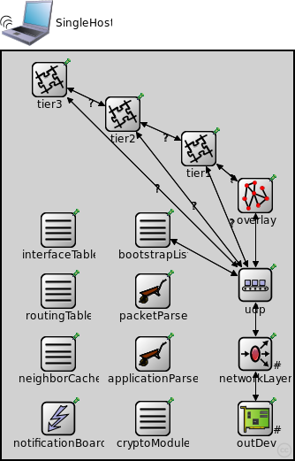
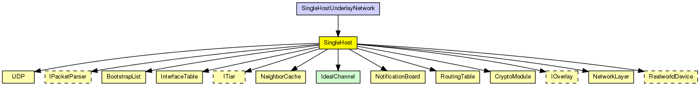
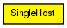

This documentation is released under the Creative Commons license
This documentation is released under the Creative Commons licensesimulates a single host to connect it to a real network
The following diagram shows usage relationships between types. Unresolved types are missing from the diagram. Click here to see the full picture.
The following diagram shows inheritance relationships for this type. Unresolved types are missing from the diagram. Click here to see the full picture.
| SingleHostUnderlayNetwork (network) |
The SingleHostUnderlay ned-file See also: SingleHostUnderlayConfigurator |
| Name | Type | Default value | Description |
|---|---|---|---|
| outDeviceType | string |
outDevice to use |
|
| overlayType | string |
overlay protocol compound module to use |
|
| tier1Type | string |
tier 1 module to use |
|
| tier2Type | string |
tier 2 module to use |
|
| tier3Type | string |
tier 3 module to use |
|
| numTiers | int |
number of tiers |
|
| parser | string |
name of the PacketParser to use |
|
| appParser | string |
name of the PacketParser to use |
|
| routingFile | string | "" | |
| IPForward | bool | false |
| Name | Value | Description |
|---|---|---|
| display | bgb=330,461;i=device/wifilaptop_l;i2=block/circle_s |
| Name | Direction | Size | Description |
|---|---|---|---|
| overlayNeighborArrowIn [ ] | input |
incoming gate for direct connections from overlay neighbors |
|
| overlayNeighborArrowOut [ ] | output |
outgoing gate for direct connections to overlay neighbors |
| Name | Type | Default value | Description |
|---|---|---|---|
| networkLayer.ip.procDelay | double | 0s | |
| networkLayer.arp.retryTimeout | double | 1s |
number seconds ARP waits between retries to resolve an IP address |
| networkLayer.arp.retryCount | int | 3 |
number of times ARP will attempt to resolve an IP address |
| networkLayer.arp.cacheTimeout | double | 120s |
number seconds unused entries in the cache will time out |
| outDev.mtu | int |
maximum transmission unit of the underlaying network |
|
| neighborCache.rpcUdpTimeout | double |
default timeout value for direct RPCs |
|
| neighborCache.rpcKeyTimeout | double |
default timeout value for routed RPCs |
|
| neighborCache.optimizeTimeouts | bool |
calculate timeouts from measured RTTs and network coordinates |
|
| neighborCache.rpcExponentialBackoff | bool |
if true, doubles the timeout for every retransmission |
|
| neighborCache.debugOutput | bool |
enable debug output |
|
| neighborCache.enableNeighborCache | bool |
use neighbor cache for reducing ping traffic? |
|
| neighborCache.rttExpirationTime | double |
expiration of the validity of the measured rtts |
|
| neighborCache.maxSize | double |
maximum size of the cache |
|
| neighborCache.rttHistory | int | ||
| neighborCache.timeoutAccuracyLimit | double | ||
| neighborCache.defaultQueryType | string | ||
| neighborCache.defaultQueryTypeI | string | ||
| neighborCache.defaultQueryTypeQ | string | ||
| neighborCache.doDiscovery | bool | ||
| neighborCache.ncsType | string | ||
| neighborCache.ncsSendBackOwnCoords | bool | ||
| neighborCache.gnpDimensions | int |
gnp settings |
|
| neighborCache.gnpCoordCalcRuns | int | ||
| neighborCache.gnpLandmarkTimeout | double | ||
| neighborCache.npsMaxLayer | int |
nps settings |
|
| neighborCache.vivaldiShowPosition | bool |
vivaldi settings |
|
| neighborCache.vivaldiErrorConst | double | ||
| neighborCache.vivaldiCoordConst | double | ||
| neighborCache.vivaldiDimConst | double | ||
| neighborCache.vivaldiEnableHeightVector | bool | ||
| neighborCache.svivaldiLossConst | double |
svivaldi settings |
|
| neighborCache.svivaldiLossResetLimit | double | ||
| neighborCache.simpleNcsDelayFaultType | string |
simpleNcs settings |
|
| bootstrapList.rpcUdpTimeout | double |
default timeout value for direct RPCs |
|
| bootstrapList.rpcKeyTimeout | double |
default timeout value for routed RPCs |
|
| bootstrapList.optimizeTimeouts | bool |
calculate timeouts from measured RTTs and network coordinates |
|
| bootstrapList.rpcExponentialBackoff | bool |
if true, doubles the timeout for every retransmission |
|
| bootstrapList.debugOutput | bool |
enable debug output |
|
| bootstrapList.mergeOverlayPartitions | bool |
if true, detect and merge overlay partitions |
|
| bootstrapList.maintainList | bool |
maintain a list of bootstrap candidates and check them periodically |
|
| cryptoModule.keyFile | string |
the name of the file containing the public key pair used to sign messages |
// // simulates a single host to connect it to a real network // module SingleHost { parameters: string outDeviceType; // outDevice to use string overlayType; // overlay protocol compound module to use string tier1Type; // tier 1 module to use string tier2Type; // tier 2 module to use string tier3Type; // tier 3 module to use int numTiers; // number of tiers string parser; // name of the PacketParser to use string appParser; // name of the PacketParser to use string routingFile = default(""); bool IPForward = default(false); @display("bgb=330,461;i=device/wifilaptop_l;i2=block/circle_s"); gates: input overlayNeighborArrowIn[]; // incoming gate for direct connections from overlay neighbors output overlayNeighborArrowOut[]; // outgoing gate for direct connections to overlay neighbors submodules: notificationBoard: NotificationBoard { parameters: @display("p=64,415"); } interfaceTable: InterfaceTable { parameters: @display("p=64,202"); } routingTable: RoutingTable { parameters: IPForward = IPForward; // true if ip packets should be forwarded routerId = ""; // id of the router routingFile = routingFile; // use predefined routing file if given @display("p=64,271"); } packetParser: <parser> like IPacketParser { parameters: @display("p=171,271;i=block/wheelbarrow"); } applicationParser: <appParser> like IPacketParser { parameters: @display("p=171,342;i=block/wheelbarrow"); } tier3: <tier3Type> like ITier { parameters: @display("p=54,32;i=block/segm"); } tier2: <tier2Type> like ITier { parameters: @display("p=137,71;i=block/segm"); } tier1: <tier1Type> like ITier { parameters: @display("p=223,110;i=block/segm"); } overlay: <overlayType> like IOverlay { parameters: @display("p=287,163;i=block/network2"); } udp: UDP { parameters: @display("p=287,264"); } networkLayer: NetworkLayer { parameters: proxyARP = false; // sets proxy \ARP mode (replying to \ARP requests for the addresses for which a routing table entry exists) @display("p=287,342;i=block/fork;q=queue"); gates: ifIn[1]; ifOut[1]; } outDev: <outDeviceType> like RealworldDevice { parameters: @display("p=287,415,row,90;q=txQueue;i=block/ifcard"); } neighborCache: NeighborCache { parameters: @display("p=64,342"); } bootstrapList: BootstrapList { parameters: @display("p=171,202"); } cryptoModule: CryptoModule { parameters: @display("p=171,415"); } connections allowunconnected: tier1.to_lowerTier --> overlay.appIn if numTiers>0; tier1.from_lowerTier <-- overlay.appOut if numTiers>0; tier1.udpOut --> udp.appIn++ if numTiers>0; udp.appOut++ --> tier1.udpIn if numTiers>0; tier2.to_lowerTier --> tier1.from_upperTier if numTiers > 1; tier2.from_lowerTier <-- tier1.to_upperTier if numTiers > 1; tier2.udpOut --> udp.appIn++ if numTiers>1; udp.appOut++ --> tier2.udpIn if numTiers>1; tier3.to_lowerTier --> tier2.from_upperTier if numTiers > 2; tier3.from_lowerTier <-- tier2.to_upperTier if numTiers > 2; tier3.udpOut --> udp.appIn++ if numTiers>2; udp.appOut++ --> tier3.udpIn if numTiers>2; overlay.udpOut --> udp.appIn++; overlay.udpIn <-- udp.appOut++; bootstrapList.udpOut --> udp.appIn++; bootstrapList.udpIn <-- udp.appOut++; udp.ipOut --> networkLayer.udpIn; udp.ipIn <-- networkLayer.udpOut; // connections to network outside outDev.netwOut --> networkLayer.ifIn[0]; outDev.netwIn <-- networkLayer.ifOut[0]; }
This documentation is released under the Creative Commons license